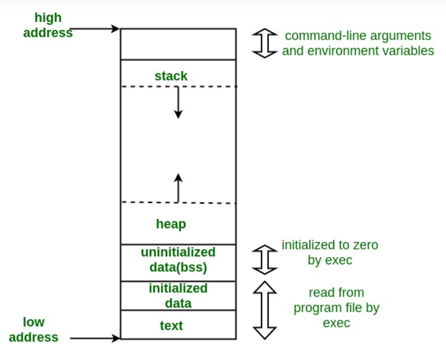

see examples at the end of the page
see also

1. text segment (aka code segment) - contains executable instructions. used for frequently executed programs, such as text editors, the C compiler, the shells, and so on. Also, the text segment is often read-only
2. Initialized Data Segment- contains initialized global variables and static variables.
it has two areas: initialized only-read areaand the initialized read-write area.- initialized read-write- will store:
- globalstring char s[] = “hello world”
- global int x = 10
- static int x = 10
- global const char* string = “hello world” ; the char pointer variable "string"will be stored in r.w (cause the const refers to the literal)
- initialized only-read - will store:
- in a global const char* string = “hello world” ; the const literal "hello world"
- in a global const char* const string = “hello world” ; both the pointer and the literal are r.o
3. Uninitialized Data Segment - bss - data in this segment is initialized by the kernel to arithmetic 0 before the program starts executing.- i.e -
- static int x
- a global int i
- the are initialized to 0.
4. Stack - a LIFO structure, on x86 it starts from high address and grows towards 0, built of stack frames, the frames contain a minimum of return address, a pointer points to the top of the stack, Each time a recursive function calls itself, a new stack frame is used, so one set of variables doesn’t interfere with the variables from another instance of the function. the stack can allocate bothstatic and dynamic memory
5. heap - can allocate only dynamic memory, begins at the end of the bss (uninitialized data) and grows larger
6. above the stack - enviroment variables, argv and argc are stored above the stack. argc is defined by argv, which in he's case, defined by user input, env is the result of heridity from the current enviroment.